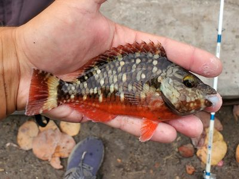
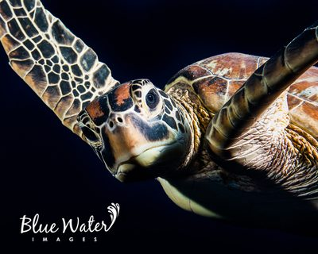

Manifest SHA-256: 160a57529f809fb1ff8ef73d7024431780d90d91e48223eb636505b002437bc3
8 photos of 8 species. Each image is the exact thumbnail that would be bundled.
For each photo, check: it shows this species, in the colours a diver would see (compare the features
listed; note a juvenile or other life stage); it is a clear, preferably lateral, whole-animal underwater photo; and the
photographer and licence match its photo page. Note anything else that matters to you, such as a watermark or a hand in
the frame. Approving puts the species' first approved photo on its page and in results, credited as shown. Reject any
photo with a note; the rest of the batch can still be approved.
To decide, reply with your decision in your own words and this manifest hash.

Stoplight Parrotfish Sparisoma viride
Photo 1 · inaturalist:photo:451417243
Distinguishing features
- Beak-like dental plates
- Bluntly rounded head
Colours: green, red, yellow · Markings: beak, stripes
Drew · CC BY-NC 4.0 · iNaturalist
Photo page · Observation
(research grade, observed 2024-11-18)

Green Sea Turtle Chelonia mydas
Photo 1 · inaturalist:photo:6483342
Distinguishing features
- Oval shell
- Small rounded head
- Paddle-like flippers
Colours: brown, olive, gray, black · Markings: shell
Kimberly Tripp Randal · CC BY-NC 4.0 · iNaturalist
Photo page · Observation
(research grade, observed 2015-07-08)